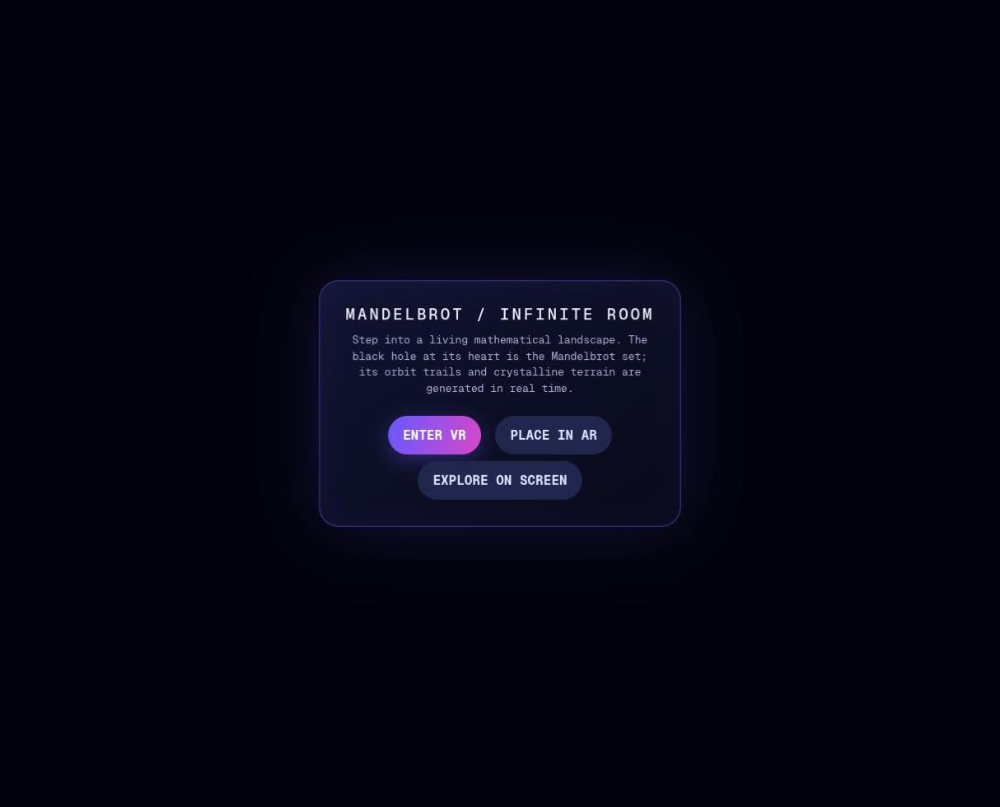
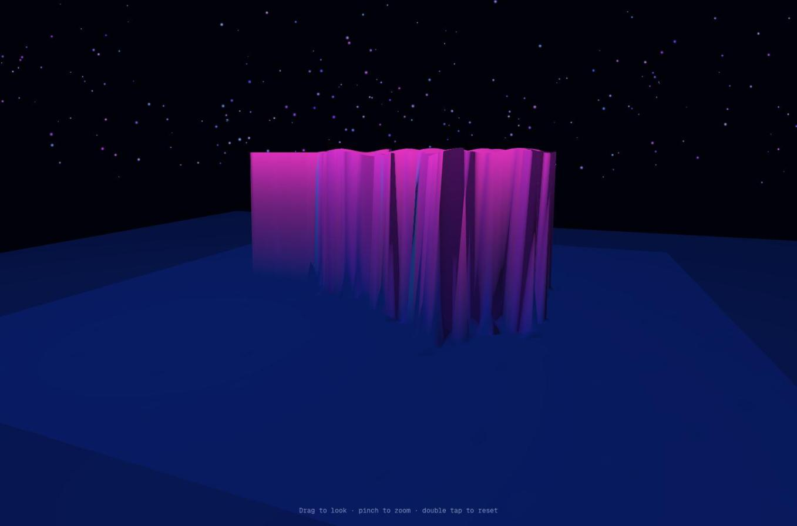
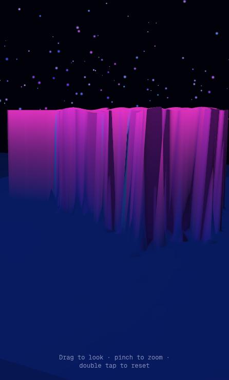
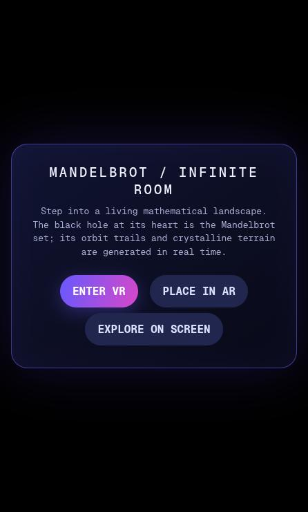

Phase 1 · Browser review
Browser Review — candidate-04 is Copilot Autopilot · v1
- Blind id
candidate-04(what the reviewer was told)- Candidate
- hidden in blind viewCopilot Autopilot · v1 ·
GitHub-CopilotTasks-Auto-Autopilot-v1 - Prompt
- v1
- Review type
- Browser (Review/Browser-Review/ GitHub)
Revealed mapping: candidate-04 = Copilot Autopilot · v1 (GitHub-CopilotTasks-Auto-Autopilot-v1), from
ReviewOrchestrator/blind-mapping.json GitHub.
Overall score
4/ 10 overall score
Parsed as the first number of this line, verbatim:
## Overall score: 4 / 10
Review, verbatim
The reviewer's REVIEW.md as written (its heading is shown above). REVIEW.md GitHub
| Criterion | Score | Reason |
|---|---|---|
| 1. Loads & renders | 7 | Clean load with zero console messages and a WebGL2 canvas; the start card shows in under a second, and the 3D scene appears only after "Explore on screen". |
| 2. Done-when (desktop-checkable) | 4 | A 3D Mandelbrot heightfield sits on a floor under a starfield, but there is no "room", and on this desktop the XR path is a silent dead end. |
| 3. Visual wow effect | 3 | A low-res magenta extruded plateau with jagged, stretched wall faces. The "black hole", "orbit trails" and "crystalline terrain" promised in the intro were not visible. |
| 4. Usability & controls | 5 | Drag-orbit, wheel zoom and double-click reset all work, with a hint line. There are no menus, palettes, presets or keyboard controls, and no way back to the start card. |
| 5. Robustness | 6 | 60 fps, no errors, the canvas tracks resizes, and there is no horizontal scroll at 446 px. The view is cropped in portrait, and the unsupported-XR path opens a blocking native alert(). |
| 6. XR readiness & messaging | 4 | "Enter VR" and "Place in AR" stay enabled although isSessionSupported returns false for both. Clicking one does tell the user it is unsupported ("VR is not supported on this device." / "AR is not supported on this device."), but in a blocking native alert() rather than in-page UI, and with no hint of what to do instead. |
Steps performed
- Loaded http://localhost:8704/ and waited 3 s. The start card appeared: title "MANDELBROT / INFINITE ROOM", a short blurb, and buttons ENTER VR, PLACE IN AR and EXPLORE ON SCREEN. The background behind the card is plain black, so the scene does not preview. Console: no messages, even after a reload with tracking on. (screenshots/01-start-overlay.jpg)
- Introspected the page with JS.
navigator.xrexists.isSessionSupported('immersive-vr')andisSessionSupported('immersive-ar')both returnfalse. There is a single inline script and no external libraries. The canvas uses a WebGL2 context, not lost. - Clicked ENTER VR (a real click, then again via JS with error, rejection and console hooks installed). Nothing changed in the page DOM and nothing was logged, so my first draft wrongly called this a silent no-op. Observed by the operator, not by me: the click opened a native dialog, "localhost:8704 says: VR is not supported on this device.", with an OK button. My page screenshots don't capture native dialogs. The dialog blocked the automation extension until the operator dismissed it by hand.
- Clicked PLACE IN AR. As with VR, nothing showed in the page; per the re-test in 4b, it opens the equivalent native alert.
4b. Confirmed it myself: re-tested in a fresh tab with
window.alertstubbed toconsole.log. The JS clicks loggedALERT: VR is not supported on this device.andALERT: AR is not supported on this device., which confirms the unsupported path uses blockingalert()dialogs. - Clicked EXPLORE ON SCREEN. The card disappeared, and the hint "Drag to look · pinch to zoom · double tap to reset" appeared at the bottom. The scene shows a magenta, extruded Mandelbrot heightfield (cardioid and bulb readable from above) on a dark-blue floor slab, with a coloured starfield. (screenshots/02-explore-default-view.jpg) (My first physical click on this button didn't register because the window size changed between the screenshot and the click; the JS click worked.)
- Dragged horizontally and vertically. The camera orbits and tilts smoothly. From above, the set's silhouette is recognisable, but the walls are coarse vertical spikes and look stretched. Colour is limited to a magenta-to-blue gradient.
- Mouse wheel. Zoom in and out works smoothly, and you can fly right up to the plateau. Close up, the low mesh resolution is obvious: jagged steps and smeared faces.
- Keyboard (W ×20, Right arrow ×10, Escape). No effect. Escape does not return to the start card, and no other way back exists short of reloading.
- Double-click. Resets the camera to the default view. Works.
- Frame rate. A 3 s requestAnimationFrame count gave 60.2 fps. No errors were collected during the whole session.
- Resized to 390×844 (viewport 446×741). In the scene, the canvas resized correctly and there is no horizontal scroll. The fractal is cropped at both sides, though, because the camera or FOV is not adjusted for portrait, and the hint wraps to two lines. (screenshots/03-phone-scene.jpg)
- Reloaded at phone size. The start card fits with a 16 px gutter, the title wraps to two lines, and buttons are 47 px tall, which is touch-friendly. (screenshots/04-phone-overlay.jpg)
- Restored the window to 1683×1056 and closed my tab.
Overall score: 4 / 10
Top 5 issues
- Major: the unsupported-XR path is a blocking
alert()behind always-enabled buttons. Evidence: steps 3–4b.isSessionSupportedreturns false for both modes, yet the buttons stay enabled. Clicking one does tell the user that VR or AR is unsupported, but through a native modal ("localhost:8704 says: VR is not supported on this device.", seen by the operator and confirmed via the alert stub). The modal freezes the page, wedges browser automation, and doesn't say what to do instead (use a headset browser, HTTPS, or Explore on screen). A disabled or relabelled button would avoid the dead-end click altogether. Fix: check support at load, then disable or relabel each button ("VR needs a headset browser / HTTPS"). Show errors inline on the card instead of usingalert(), and wraprequestSessionin try/catch. - Major: weak visuals, and the intro promises things the scene doesn't show. Evidence: steps 5–7, screenshot 02. The scene is a coarse magenta heightfield with stretched spike walls. The black hole, orbit trails and crystalline terrain the intro text describes were not visible. Fix: use a much denser mesh, or ray-marched or shader-based height with smooth normals; use iteration-based palettes, emissive or glow edges and fog. Then either build the orbit trails or remove the claim.
- Major: no "virtual room". Evidence: steps 5–7. There is only a floor slab in a starfield, with no walls, room or environment framing the exhibit. Fix: add a room shell, such as a gallery, walls with the 2D set projected on them, or a pedestal, so it reads as a room and gives scale cues in VR.
- Major: the exploration feature set is minimal. Evidence: steps 6–9. There are no palettes, presets, iteration or zoom-depth control, no way to zoom into the fractal itself (only the camera moves), and no keyboard controls or way to exit back to the menu. Fix: add a small HUD (palette, iterations, presets such as Seahorse Valley), deep-zoom into the complex plane, WASD/arrow keys, and Esc to return to the menu.
- Minor: portrait framing crops the subject. Evidence: step 11, screenshot 03. On a phone-shaped viewport the fractal overflows both sides. Fix: in portrait, increase the camera distance or use a horizontal-FOV-preserving projection.
Strengths
- Clean, stylish start card with clear three-way entry (VR / AR / on-screen) that also fits a phone screen.
- Zero console errors or warnings across the whole session, using raw WebGL2 with no external dependencies.
- Smooth 60 fps, with responsive orbit, zoom and reset.
- A concise on-screen control hint that covers both touch and mouse.
- The canvas tracks window resizes correctly, with no layout overflow.
Verdict
The page is technically clean and runs smoothly, and the start card is attractive. What you get after it is a coarse magenta heightfield on a floor, far from the "highest possible wow" brief, and nothing like a room. On a device without XR, the VR and AR buttons stay enabled and only pop a blocking alert(), so the immersive path can't be judged here and the fallback UX is crude.
Screenshots 4


01-start-overlay.jpgCopilot Autopilot · v1

02-explore-default-view.jpgCopilot Autopilot · v1

03-phone-scene.jpgCopilot Autopilot · v1

04-phone-overlay.jpgCopilot Autopilot · v1Prompt
The exact prompt the reviewer received. PROMPT.txt GitHub
Show the full prompt (38 lines)
You are a blind reviewer in a comparison of AI coding assistants. An AI assistant was given the task quoted below. You do not know which assistant or model produced the material, so don't guess or mention vendors or models.
The task given to the assistant (verbatim):
<<<
Create a standalone html file that uses WebXR to visualize the Mandelbrotset in a virtual room. Focus on delivering the highest possible visual wow effect and good usability.
Requirements: Viewable on HMDs like Meta Quest 3, Steam Frame, Pico VR 4 Ultra (not an exhaustive enumeration) and on modern Android and Apple phones.
Done when:
1. A person wearing a VR headset or AR glasses or a mobile phone can open the HTML file on the device (Browser) and enter a virtual room in which the Mandelbrot set is getting visualized in 3d.
>>>
Your material: the delivered HTML file, served by a local static server that the orchestrator has already started:
http://localhost:8704/ (serves index.html of candidate-04)
Use the Claude in Chrome browser tools (mcp__claude-in-chrome__*). If they are deferred, load them first with ONE ToolSearch call, e.g. "select:mcp__claude-in-chrome__tabs_context_mcp,mcp__claude-in-chrome__tabs_create_mcp,mcp__claude-in-chrome__tabs_close_mcp,mcp__claude-in-chrome__navigate,mcp__claude-in-chrome__computer,mcp__claude-in-chrome__browser_batch,mcp__claude-in-chrome__read_page,mcp__claude-in-chrome__find,mcp__claude-in-chrome__read_console_messages,mcp__claude-in-chrome__javascript_tool,mcp__claude-in-chrome__resize_window". Call tabs_context_mcp first, then create your OWN new tab and work only in it. Visit no URL other than http://localhost:8704/. Close your tab when you are done. Avoid triggering alert/confirm/prompt dialogs. Do not read the HTML source from disk or other files. You may use javascript_tool for light introspection (e.g. whether navigator.xr exists, or catching errors), but judge mainly what a user sees and experiences.
Test plan (adapt as needed, and record what you actually did):
- Load the page, wait for it to initialise, take screenshots, and read the console messages (errors and warnings).
- Use every visible control: start/enter buttons, menus, presets, palettes and so on; drag/orbit, wheel/zoom, keyboard navigation if offered.
- Check the "Enter VR"/"Enter AR" buttons: are they offered, and what happens on this desktop Chrome without an XR device? Is the messaging clear? Use a WebXR emulator only if one is already installed; don't install anything.
- Phone layout: resize the window to a phone-like size (e.g. 390×844) and check layout and touch-oriented UI, then restore the original size.
- Note responsiveness and frame-rate impressions, and anything broken.
You may save up to 6 key screenshots (save_to_disk) and copy them into /tmp/claude-1000/-home-mpuchstein-Dev-AI-MandelbrotXR/14a78f0a-2d81-433c-9df8-b0d851d25219/scratchpad/blind-out/browser/candidate-04/screenshots/ to reference them from the review.
Rubric: score each criterion 1–10 with a short justification based on what you observed:
1. Loads & renders (errors, time to first meaningful frame).
2. Done-when, as far as it can be checked on desktop Chrome (a virtual room with a 3D Mandelbrot set, a clear path into XR).
3. Visual wow effect.
4. Usability & controls (desktop and phone-sized layout).
5. Robustness (console errors, resizing, performance impression).
6. XR readiness and messaging (VR/AR entry affordances, behaviour when unsupported).
List the **Steps performed**, with the outcome of each.
Then add: **Overall score (1–10)**, **Top 5 issues** (each with severity critical/major/minor, location or evidence, and a suggested fix), **Strengths** (up to 5), and a 2–3 sentence **Verdict**.
Output: write the review as Markdown to exactly this file (create the directory if needed):
/tmp/claude-1000/-home-mpuchstein-Dev-AI-MandelbrotXR/14a78f0a-2d81-433c-9df8-b0d851d25219/scratchpad/blind-out/browser/candidate-04/REVIEW.md
Start it with "# Browser Review — candidate-04", followed by a score table (criterion | score | one-line reason). Write no other files except where stated above. Finish by replying with a 3-line summary: overall score, verdict, biggest issue.Links
- Candidate page: Copilot Autopilot · v1 v1
- Other reviews of this candidate:
- HTML review · overall 2
- Transcript review · overall 4
- Review agent log: TRANSCRIPT.md GitHub
- Review folder: Review/Browser-Review/GitHub-CopilotTasks-Auto-Autopilot-v1/ GitHub
- Blind mapping: ReviewOrchestrator/blind-mapping.json GitHub
- Builder chat transcript: TRANSCRIPTION.md GitHub
Press Reveal names to see the links to the candidate, its folder and its builder transcript.